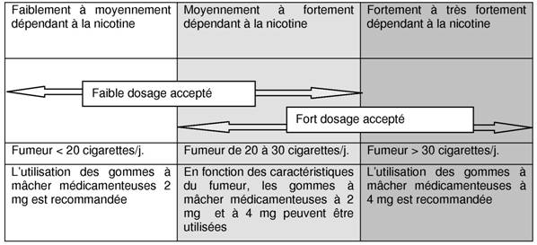

RÉSUMÉ DES CARACTÉRISTIQUES DU PRODUIT
ANSM - Mis à jour le : 17/12/2014
NICOTINELL FRUIT EXOTIQUE 2 mg, gomme à mâcher médicamenteuse
2. COMPOSITION QUALITATIVE ET QUANTITATIVE
Nicotine ............................................................................................................. 2,00 mg
Sous forme de nicotine-polacriline (1: 4) .............................................................. 10,00 mg
Pour une gomme à mâcher médicamenteuse.
Excipients à effet notoire : Sorbitol (100 mg), sodium (11,44 mg) et butylhydroxytoluène (E 321).
Pour la liste complète des excipients, voir rubrique 6.1.
Gomme à mâcher médicamenteuse.
Gomme blanche de forme rectangulaire.
4.1. Indications thérapeutiques
Bien que l'arrêt définitif de la consommation de tabac soit préférable, ce médicament peut être utilisé dans une stratégie de réduction du tabagisme comme une étape vers l'arrêt définitif.
Une prise en charge adaptée améliore les chances de succès à l'arrêt du tabac.
4.2. Posologie et mode d'administration
Les gommes à mâcher dosées à 2 mg ne sont pas recommandées aux fumeurs fortement ou très fortement dépendants de la nicotine.
Le dosage initial sera personnalisé en fonction de la dépendance nicotinique du sujet. Le dosage optimal est décrit dans le tableau ci-après :

En cas d'apparition d'effets indésirables lors de l'utilisation de gommes à mâcher dosées à 4 mg, utiliser les gommes à mâcher à 2 mg.
Le choix du dosage initial doit être déterminé en fonction des besoins individuels selon la dépendance à la nicotine.
Mâcher une gomme chaque fois que l'envie de fumer apparaît.
La consommation de gommes à mâcher dosées à 2 mg est généralement de 8 à 12 gommes par jour et ne doit en aucun cas dépasser 25 gommes par jour.
Les caractéristiques de cette forme pharmaceutique sont telles que les nicotinémies obtenues peuvent être différentes d'un individu à l'autre. La fréquence d'administration sera modulée en conséquence, en fonction des besoins individuels dans la limite de la posologie maximum.
Arrêt complet du tabac
La durée du traitement est individuelle. Normalement, ce traitement doit être poursuivi pendant au moins trois mois. Après trois mois, le patient doit progressivement réduire le nombre de gommes par jour jusqu'à l'arrêt complet du traitement. Le traitement sera arrêté lorsque la consommation est réduite à 1 à 2 gommes par jour.
Il est recommandé de ne pas utiliser les gommes à mâcher au-delà de 1 an. Toutefois, certains "ex-fumeurs" peuvent avoir besoin d'un traitement plus long afin d'éviter les rechutes.
Les conseils d'un professionnel de santé peuvent aider un fumeur dans l'arrêt du tabac.
Réduction de la consommation de tabac
Dans la mesure du possible, alterner les gommes à la nicotine et les cigarettes.
Mâcher une gomme dès que l’envie de fumer apparaît afin de réduire au maximum la consommation de cigarettes et rester aussi longtemps que possible sans fumer.
Si la réduction de la consommation de cigarettes n’a pas été obtenue après 6 semaines de traitement, il est recommandé de prendre conseil auprès d’un professionnel de santé. La réduction de la consommation du tabac doit conduire progressivement le patient à un arrêt complet du tabac. Cet arrêt doit être tenté le plus tôt possible dans les 6 mois suivant le début du traitement. Si, au-delà de 9 mois après le début du traitement, la tentative d’arrêt complet du tabac a échoué, il est recommandé de prendre conseil auprès d’un professionnel de santé.
Il est recommandé de ne pas utiliser les gommes à mâcher au-delà de 1 an. Toutefois, certains "ex-fumeurs" peuvent avoir besoin d'un traitement plus long afin d'éviter les rechutes.
Les conseils d'un professionnel de santé peuvent aider un fumeur dans l'arrêt du tabac.
Mode d'administration
· Mâcher la gomme jusqu'à ce que le goût devienne fort.
· Placer la gomme entre la gencive et la joue.
· Quand le goût s'estompe, mâcher de nouveau la gomme.
· Alterner mastications et pauses pendant 30 minutes.
La prise de boissons acides telles que café ou soda peut diminuer l'absorption de la nicotine au travers de la muqueuse buccale. Ces boissons doivent être évitées dans les 15 minutes précédant la prise d'une gomme à mâcher.
Enfants et adolescents
NICOTINELL FRUIT EXOTIQUE 2 mg, gomme à mâcher ne doit pas être administré chez les sujets de moins de 18 ans sans avis médical. Il n'existe pas d'expérience de l'administration de ce médicament chez le sujet de moins de 18 ans
· Hypersensibilité à l'un des constituants.
· Sujets non-fumeurs.
4.4. Mises en garde spéciales et précautions d'emploi
En cas d'échec chez ces fumeurs dépendants à la nicotine, l'utilisation des gommes à mâcher NICOTINELL FRUIT EXOTIQUE 2 mg peut être envisagée ; cependant, les données de sécurité clinique chez ces patients étant limitées, l'initiation du traitement ne devra se faire que sous surveillance médicale.
Utiliser les gommes à mâcher NICOTINELL avec précaution chez les patients présentant une hypertension artérielle, un angor stable, un trouble vasculaire cérébral, des maladies artérielles périphériques occlusives, une insuffisance cardiaque, un diabète, une hyperthyroïdie ou un phéochromocytome, ou une insuffisance hépatique ou rénale sévère. Chez ces patients, l'arrêt complet de la consommation de tabac sans traitement de substitution à la nicotine devrait d'abord être recommandé.
La nicotine déglutie peut exacerber les symptômes chez les sujets souffrant d'œsophagite, d'inflammation buccale ou pharyngée, de gastrite ou d'ulcère gastrique.
Les doses de nicotine tolérées chez des adultes fumeurs peuvent provoquer une intoxication grave voire mortelle chez le jeune enfant (voir rubrique 4.9).
Les personnes ayant des problèmes avec l’articulation de la mâchoire et les porteurs de prothèses dentaires peuvent éprouver des difficultés à mâcher les gommes. Dans ce cas, il est recommandé d'utiliser une autre forme pharmaceutique de substitut nicotinique.
Mises en garde particulières liées aux excipients
Ce médicament contient du sorbitol. En conséquence, les patients présentant de rares problèmes héréditaires d'intolérance au fructose ne doivent pas prendre ce médicament.
Les gommes NICOTINELL FRUIT EXOTIQUE 2 mg contiennent 0,1 g/gomme de sorbitol (E420), source de fructose à raison de 0,02 g/gomme. L'apport calorique de chaque gomme est de 1,0 Kcal/gomme.
Prendre en compte la teneur en sodium par gomme à mâcher (11,44 mg) chez les patients suivant un régime hyposodé strict.
Ce médicament contient de l'hydroxytoluène (E321), ce qui peut provoquer des irritations locales de la muqueuse buccale.
4.5. Interactions avec d'autres médicaments et autres formes d'interactions
Sevrage tabagique : le tabagisme, mais pas la nicotine, est associé à une augmentation de l'activité de l'enzyme CYP1A2. L'arrêt du tabagisme peut entraîner une diminution de la clairance des substrats de cette enzyme et l'augmentation des taux plasmatiques de certains médicaments avec des conséquences cliniques notables pour les molécules à faible marge thérapeutique telles que théophylline, tacrine, olanzapine et clozapine.
La concentration plasmatique de principes actifs métabolisés par la CYP1A2 tels que caféine, paracétamol, phénazone, phénylbutazone, pentazocine, lidocaïne, benzodiazépines, warfarine, oestrogènes et vitamine B12 peut être augmentée après l’arrêt du tabac. Cependant, les conséquences cliniques de l'augmentation des concentrations de ces principes actifs ne sont pas documentées.
Les autres effets rapportés du tabagisme sont une réduction de l'effet analgésique du propoxyphène, la diminution de l'effet diurétique du furosémide, une diminution de l'effet pharmacologique du propranolol sur la tension artérielle et le rythme cardiaque, une diminution de l'effet anti-ulcéreux des anti-H2.
Le tabac et la nicotine peuvent entraîner une augmentation des concentrations sanguines du cortisol et des catécholamines comme par exemple provoquer une diminution de l'effet de la nifédipine ou des antagonistes adrénergiques et une augmentation de l'effet des agonistes adrénergiques.
L'augmentation de l'absorption sous-cutanée de l'insuline qui se produit à l'arrêt du tabac peut nécessiter une diminution de la dose d'insuline.
Chez la femme enceinte, il convient de toujours recommander un arrêt complet de la consommation de tabac, sans traitement de substitution à la nicotine.
Cependant, en cas d'échec face à une patiente fortement dépendante, le sevrage tabagique par ce médicament peut être conseillé. En effet, le risque encouru par le fœtus est probablement plus faible que celui lié au tabagisme puisque :
· les concentrations plasmatiques maximales de nicotine sont plus faibles que celles obtenues avec la nicotine inhalée,
· il n'y a pas d'exposition aux hydrocarbures polycycliques et à l'oxyde de carbone,
· les chances d'arrêter le tabagisme avant le troisième trimestre sont augmentées.
La poursuite du tabagisme durant le troisième trimestre peut conduire à un retard de croissance intra-utérin, voire une prématurité ou une mort fœtale, en fonction de la quantité quotidienne de tabac.
L'arrêt du tabagisme avec ou sans substitution nicotinique ne doit pas s'envisager de façon isolée, mais s'inscrire dans le cadre d'une prise en charge globale sous contrôle médical.
Au troisième trimestre de la grossesse, la nicotine a des effets hémodynamiques (par exemple modification du rythme cardiaque fœtal) qui peuvent retentir sur le fœtus proche du terme. C'est pourquoi la gomme ne devrait être utilisée après le sixième mois de grossesse que sous surveillance médicale chez les femmes n'ayant pas réussi à arrêter de fumer avant le troisième trimestre.
La nicotine passe dans le lait maternel en quantité qui pourrait retentir sur l'enfant même à des doses thérapeutiques.
La gomme NICOTINELL, de même que le tabagisme, doit donc être évitée durant l'allaitement.
Si l'arrêt du tabagisme n'est pas obtenu, l'utilisation de la gomme durant l'allaitement ne sera décidée que sur avis médical.
En cas d'utilisation de ce médicament durant l'allaitement, prendre la gomme juste après la tétée et ne pas en prendre pendant les deux heures qui précèdent la tétée suivante.
4.7. Effets sur l'aptitude à conduire des véhicules et à utiliser des machines
La nicotine des gommes à mâcher peut entraîner des effets indésirables similaires à ceux de la nicotine absorbée via le tabagisme du fait des effets pharmacologiques de la nicotine, qui sont dose-dépendants.
Les réactions non dose-dépendantes sont les suivantes : douleur du muscle de la mâchoire, érythème, urticaire, hypersensibilité, œdème de Quincke et réactions anaphylactiques.
La plupart des effets indésirables signalés surviennent pendant les 3 à 4 premières semaines de traitement.
La nicotine apportée par les gommes peut parfois entraîner une légère irritation de la gorge ainsi qu'une hypersalivation au début du traitement.
La déglutition d'une trop grande quantité de nicotine peut provoquer un hoquet.
Les sujets souffrant de troubles digestifs peuvent présenter au début des signes légers de dyspepsie ou de brûlures gastriques. Les symptômes peuvent être soulagés en mâchant la gomme plus lentement.
Une consommation excessive de nicotine par le biais des gommes médicamenteuses chez des sujets qui n’ont pas l’habitude d’inhaler de la fumée de tabac, peut conduire à des nausées, des étourdissements, et des maux de têtes.
Une augmentation de la fréquence des ulcères aphteux peut survenir après l’arrêt du tabagisme.
En cas d'adhésion, les gommes peuvent dans de rares cas provoquer une altération de prothèses ou d'amalgames dentaires.
Les effets indésirables sont listés ci-dessous, par ordre de fréquence.
Fréquents (≥ 1/100 à < 1/10)
· Troubles du système nerveux : céphalées, étourdissements.
· Troubles digestifs : hoquet, troubles gastriques tels que nausées, flatulence, vomissements, inconfort digestif, brûlures d'estomac, hypersalivation, irritation de la cavité buccale et de la gorge.
· Troubles musculaires et squelettiques : douleur masticatoire.
Peu fréquents (≥ 1/1000, < 1/100)
· Troubles cardiovasculaires : palpitations.
· Troubles des tissus cutanés et sous-cutanés : érythème, urticaire.
Rares (≥ 1/10 000 à < 1/1000)
· Troubles du système immunitaire : hypersensibilité, oedème de Quincke et chocs anaphylactiques.
· Troubles cardiovasculaires : arythmies cardiaques (par exemple fibrillation auriculaire).
Certains symptômes tels qu’étourdissements, céphalées et insomnies peuvent être liés au sevrage tabagique et être dus à l’administration d’une dose insuffisante de nicotine.
Des herpes labiaux peuvent survenir lors de l'arrêt du tabagisme, mais leur relation avec le traitement nicotinique n'est pas établie.
Le patient peut rester dépendant à la nicotine après l'arrêt du tabagisme.
Déclaration des effets indésirables suspectés
La déclaration des effets indésirables suspectés après autorisation du médicament est importante. Elle permet une surveillance continue du rapport bénéfice/risque du médicament. Les professionnels de santé doivent déclarer tout effet indésirable suspecté via le système national de déclaration : Agence nationale de sécurité du médicament et des produits de santé (ANSM) et réseau des Centres Régionaux de Pharmacovigilance - Site internet: www.ansm.sante.fr.
En cas de surdosage, des symptômes correspondant à une forte consommation de tabac peuvent être observés.
La dose létale aiguë par voie orale est d'environ 0,5 à 0,75 mg de nicotine par kg de poids ce qui correspond à 40 à 60 mg chez un adulte.
Des doses même faibles de nicotine sont toxiques chez l'enfant et peuvent entraîner des symptômes d'intoxication pouvant être fatals. En cas de suspicion d'intoxication chez l'enfant, consulter immédiatement un médecin.
Un surdosage avec les gommes à base de nicotine ne peut se produire que si plusieurs gommes sont mâchées en même temps. Généralement, la toxicité de la nicotine après ingestion est minimisée par la survenue précoce de nausées et vomissements.
Le risque d'intoxication en avalant la gomme est faible. La libération de la nicotine à partir de la gomme étant lente, la quantité de nicotine absorbée par l'estomac et l'intestin est très faible et s'il y en avait, elle serait inactivée au niveau hépatique.
Les symptômes de l'intoxication par la nicotine comportent : faiblesse générale, sueurs, hypersalivation, étourdissements, maux de gorge, nausées, vomissements, diarrhée, douleurs abdominales, troubles auditifs et visuels, céphalées, tachycardie et arythmie cardiaque, dyspnée, prostration, collapsus cardiovasculaire, coma et convulsions.
Traitement du surdosage
Le traitement du surdosage doit être immédiat car les symptômes du surdosage peuvent apparaître rapidement. Les vomissements sont habituellement spontanés. L'administration d'une suspension de charbon actif par voie orale et un lavage gastrique devront être réalisés dès que possible et dans l'heure qui suit l'ingestion. Suivre les signes vitaux et entreprendre un traitement symptomatique si nécessaire.
5. PROPRIETES PHARMACOLOGIQUES
5.1. Propriétés pharmacodynamiques
La nicotine, alcaloïde principal des produits dérivés du tabac, substance naturelle agissant sur le système nerveux autonome, est un agoniste des récepteurs nicotiniques des systèmes nerveux central et périphérique qui présente des effets prononcés sur le système nerveux central et sur le système cardiovasculaire. Consommée via le tabac, la nicotine créé une dépendance résultant en une sensation de manque et autres symptômes de privation à l'arrêt de l'administration. Ces symptômes de privation incluent besoin impérieux de fumer, dysphorie, insomnie, irritabilité, frustration ou colère, anxiété, difficultés de concentration, agitation et augmentation de l'appétit ou prise de poids. Les gommes à mâcher remplacent une partie de la nicotine qui aurait été administrée par le tabac et réduisent l'intensité des symptômes de manque et la forte envie de fumer.
5.2. Propriétés pharmacocinétiques
L'élimination de la nicotine s'effectue essentiellement par métabolisme hépatique. De petites quantités de nicotine sont éliminées sous forme inchangée par voie urinaire. La demi-vie plasmatique est d'environ 3 heures.
La nicotine traverse la barrière hémato-encéphalique, le placenta et est détectable dans le lait maternel.
5.3. Données de sécurité préclinique
Des expériences chez l'animal ont montré que la nicotine provoque une perte post-implantatoire et diminue la croissance du fœtus.
Les résultats des tests de cancérogenèse n'ont pas fourni de preuve claire d'un effet cancérogène de la nicotine.
2 ans.
6.4. Précautions particulières de conservation
Conserver à une température ne dépassant pas 25°C.
6.5. Nature et contenu de l'emballage extérieur
12, 24, 48, 84, 96 ou 204 gommes à mâcher sous plaquettes (PVC/PVDC/Aluminium) de 12 gommes.
Toutes les présentations peuvent ne pas être commercialisées.
6.6. Précautions particulières d’élimination et de manipulation
L'élimination des gommes après utilisation doit être faite avec précaution.
7. TITULAIRE DE L’AUTORISATION DE MISE SUR LE MARCHE
NOVARTIS SANTE FAMILIALE S.A.S.
10 RUE LOUIS BLERIOT
92500 RUEIL-MALMAISON
8. NUMERO(S) D’AUTORISATION DE MISE SUR LE MARCHE
· 34009 217 956 9 1 : 12 gommes à mâcher sous plaquettes (PVC/PVDC/Aluminium)
· 34009 217 957 5 2 : 24 gommes à mâcher sous plaquettes (PVC/PVDC/Aluminium)
· 34009 217 958 1 3 : 48 gommes à mâcher sous plaquettes (PVC/PVDC/Aluminium)
· 34009 217 959 8 1 : 84 gommes à mâcher sous plaquettes (PVC/PVDC/Aluminium)
· 34009 217 960 6 3 : 96 gommes à mâcher sous plaquettes (PVC/PVDC/Aluminium)
· 34009 217 961 2 4 : 204 gommes à mâcher sous plaquettes (PVC/PVDC/ Aluminium)
9. DATE DE PREMIERE AUTORISATION/DE RENOUVELLEMENT DE L’AUTORISATION
[A compléter ultérieurement par le titulaire]
10. DATE DE MISE A JOUR DU TEXTE
[A compléter ultérieurement par le titulaire]
Sans objet.
12. INSTRUCTIONS POUR LA PREPARATION DES RADIOPHARMACEUTIQUES
Médicament non soumis à prescription médicale.